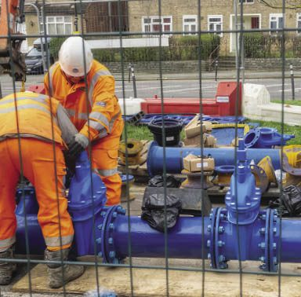

Division 01Utility ServicesJ Frost Civils offer a comprehensive range of utility services, working on live assets for the water industry and its consultants.
- Water main installation & repair
- Sewer system construction & maintenance
- Stormwater management
- Water treatment plant construction
- Trenchless technology
- Pump station construction & maintenance
- Trenching and underground services
- Leak detection
- Reactive service